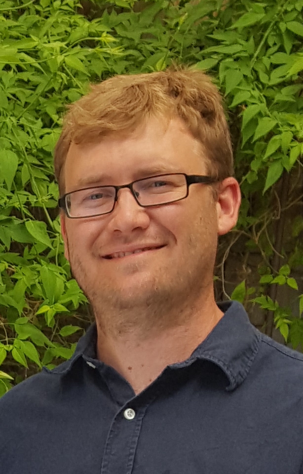

I am a Postdoctoral Research and Teaching Associate at the University of Georgia. Previously I was a postdoc at the Rényi Institute of Mathematics in Budapest, Hungary, and at Michigan State University. I obtained my PhD from the University of Texas at Austin in December 2015.My research is in low-dimensional topology. I am especially interested in smooth 4-manifolds and related subjects.
You can download my papers on the arXiv.
Fall 2019: MATH 2250 Calculus 1 (two sections)
Fall 2020: MATH 2250 Calculus 1 and MATH 8230 4-manifolds and Kirby Calculus
For more information you can consult my CV.